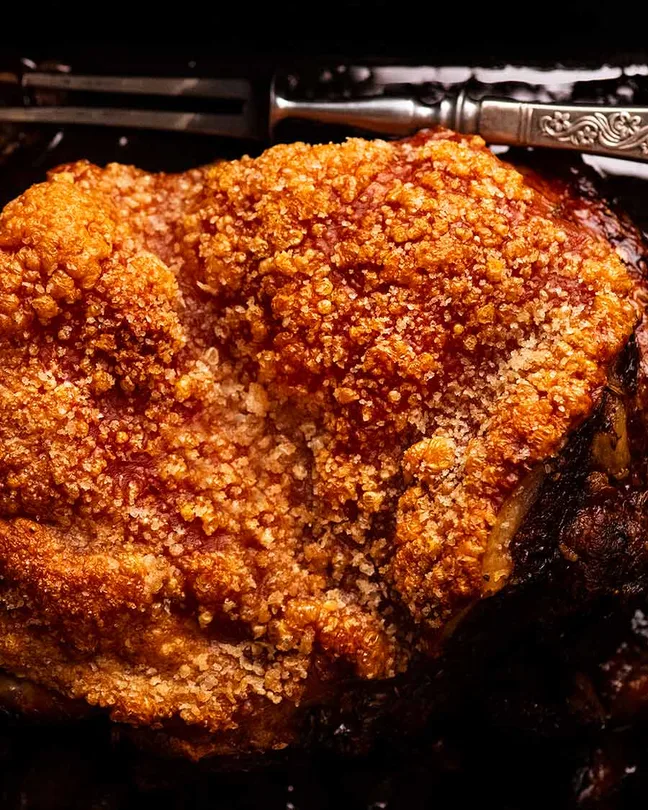

3 kilograms / 6 pounds of boneless skin on pork shoulder (not scored, remove netting)
3 tsp cooking/kosher salt
1.25 teaspoons black pepper
2 teaspoons fennel speeds (or other herbs you want)
1 teaspoon/tablespoon olive oil
1 garlic bulb (horizontally split)
2 halved onions (brown, white, or red.)
2 cups dry white wine/apple cider of choice (alcohol or not doesn't matter for cider here)
Optional Gravy
1/4 cup flour
2 cups chicken broth/stock (low sodium)
Salt + Pepper
Steps
Main Pork Skin
Pat skin dry with paper towels (if you have time, leave in the fridge uncovered overnight, otherwise make sure to pat as well as possible)
Preheat oven to 220 degrees celsius or 430 degrees fahrenheit (with a 200 degree celsius fan)
Sprinkle the pork flesh with 1.5 tablespoons of salt, all pepper, all fennel seeds, and 1 tbsp olive oil. Make sure to rub it in everywhere.
Flip the pork, drizzle the skin with 1 teaspoon of oil, then rub it. Sprinkle with remaining salt (get even coverage, otherwise parts that arent salted become flat sheets.)
Place halved garlic bulbs and onion in roasting pan. Place pork skin above them.
Pour wine into the pan, but don't wet the skin. Put it into the oven.
Lower the oven immediately, setting it to 160 degrees celsius or 320 degrees fahrenheit (with a 140 degree celsius fan)
Roast for 2.5 hours
Check the pork after 1.5 hours to see if the pork is warped/skin is unlevel. If so, adjust to make the skin surface level as possible with balls of foil and moving dislodged pork pieces to the side. Return to the oven.
If pan is drying out, add water. If there are bald batches on the skin without salt, spray lightly with oil spray and sprinkle with salt.
Turn oven up to 250 degrees celsius/485 degrees fahrenheit or as high as your oven can possibly go.
Return pork to oven for 30 mins, rotating as needed, until the skin is crispy and bubbly. If required, use foil patches with water-soaked toothpicks to cover parts that are done and crisp up the remaining parts.
Transfer the pork to the serving platter and tent it with foil. Rest it with 20 minutes and slice with a serrated knife.
Serve with gravy. Pour the gravy over the side, not the crackling.
Optional Gravy
Skim off 3 tablespoons of fat from roasting pan, place in saucepan.
Place strainer over bowl and scrape all remaining juice (including the garlic and the onion). Press out the juices, then discard the onion and garlic. Skim off remaining fat from surface and discard.
Heat saucepan with fat over medium heat. Add flour, cook for 1 minute.
Pour stock in while whisking so it's lump free. Pour in strained pan juice.
Simmer until thickened to syrup-like consistency, taking about 3 minutes. (cools while serving)
Add salt and pepper to taste, pour into serving jug, and serve with pork.
I put this recipe because it was one that my mom recently cooked. While she had it a bit burnt, the cooking tasted absolutely superb. I couldn't help but want to share it with other people around the world. I believe that everyone should experience a dish like this.

An image of the result of this recipe, an extremely crispy pork that has a golden brown tint with many crackles.